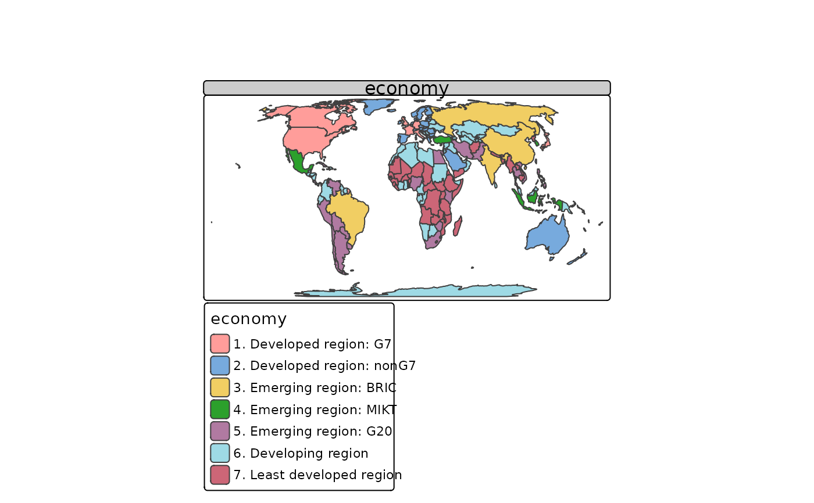
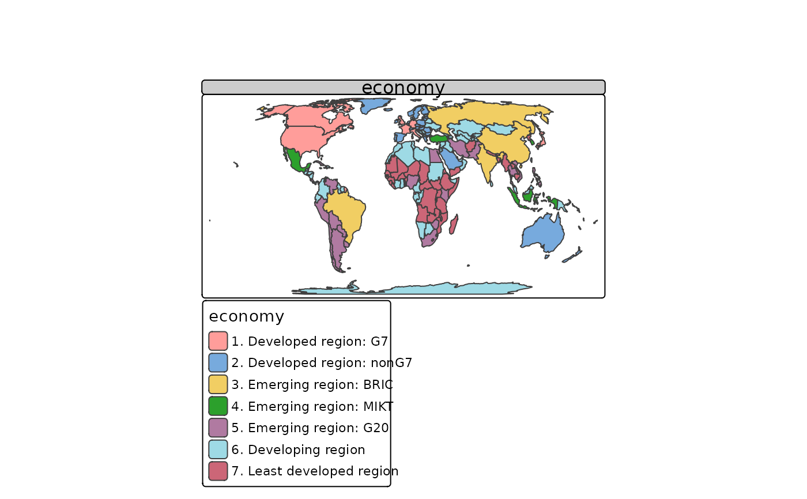

Draw a thematic map quickly. This function is a convenient wrapper of the main
plotting method of stacking tmap-elements. Without arguments or with a
search term, this functions draws an interactive map.
Usage
qtm(
shp,
fill = tm_const(),
col = tm_const(),
size = tm_const(),
shape = tm_const(),
lwd = tm_const(),
lty = tm_const(),
fill_alpha = tm_const(),
col_alpha = tm_const(),
text = tm_const(),
text_col = tm_const(),
text_size = tm_const(),
by = NULL,
scale = NULL,
title = NULL,
crs = NULL,
bbox = NULL,
basemaps = NULL,
overlays = NULL,
zindex = NA,
group = NA,
group.control = "check",
style = NULL,
format = NULL,
...
)Arguments
- shp
One of:
shape object, which is an object from a class defined by the
sforstarspackage. Objects from the packagesspandrasterare also supported, but discouraged.Not specified, i.e.
qtm()is executed. In this case a plain interactive map is shown.An OpenStreetMap search string, e.g.
qtm("Amsterdam"). In this case a plain interactive map is shown positioned according to the results of the search query (from OpenStreetMap nominatim)
- fill, col, size, shape, lwd, lty, fill_alpha, col_alpha
Visual variables.
- by
data variable name by which the data is split, or a vector of two variable names to split the data by two variables (where the first is used for the rows and the second for the columns). See also
tm_facets().- scale
numeric value that serves as the global scale parameter. All font sizes, symbol sizes, border widths, and line widths are controlled by this value. The parameters
symbols.size,text.size, andlines.lwdcan be scaled separately with respectivelysymbols.scale,text.scale, andlines.scale. See also....- title
main title. For legend titles, use
X.style, where X is the layer name (see...).- crs
Either a
crsobject or a character value (PROJ.4character string). By default, the projection is used that is defined in theshpobject itself.- bbox
bounding box. Argument passed on to
tm_shape()- basemaps
name(s) of the provider or an URL of a tiled basemap. It is a shortcut to
tm_basemap(). Set toNULLto disable basemaps. By default, it is set to the tmap optionbasemaps.- overlays
name(s) of the provider or an URL of a tiled overlay map. It is a shortcut to
tm_tiles().- zindex
zindex
- group
group
- group.control
group.control
- style
Layout options (see
tm_layout()) that define the style. Seetmap_style()for details.- format
Layout options (see
tm_layout()) that define the format. Seetmap_format()for details.- ...
arguments passed on to the
tm_*functions. The prefix of these arguments should be with the layer function name without"tm_"and a period. For instance, the palette for polygon fill color is calledfill.palette. The following prefixes are supported:shape.,fill.,borders.,polygons.,symbols.,dots.,lines.,raster.,text.,layout.,grid.,facets., andview.. Arguments that have a unique name, i.e. that does not exist in any other layer function, e.g.convert2density, can also be called without prefix.
Details
The first argument is a shape object (normally specified by tm_shape()).
The next arguments, from fill to raster, are the aesthetics from the main
layers. The remaining arguments are related to the map layout. Any argument
from any main layer function, such as tm_polygons(), can be specified (see ...).
It is also possible to stack tmap-elements on a qtm plot. See examples.
By default, a scale bar is shown. This option can be set with tmap_options()
(argument qtm.scalebar). A minimap is shown by default when qtm is called
without arguments of with a search term. This option can be set with tmap_options()
(argument qtm.minimap).
References
Tennekes, M., 2018, tmap: Thematic Maps in R, Journal of Statistical Software, 84(6), 1-39, doi:10.18637/jss.v084.i06
Examples
data(World, rivers, metro)
# just the map
qtm(World)
 # choropleth
qtm(World, fill = "economy", format = "World", style = "col_blind", projection = "+proj=eck4")
#> -- tmap v3 code detected --
#> [v3->v4] qtm(): use 'crs' instead of 'projection'

# choropleth with more specifications
qtm(World, fill="HPI", fill.n = 9, fill.palette = "div",
fill.title = "Happy Planet Index", fill.id = "name",
style = "gray", format = "World", projection = "+proj=eck4")
#> -- tmap v3 code detected --
#> [v3->v4] qtm(): use 'crs' instead of 'projection'
#> [v3->v4] tm_polygons(): migrate the argument(s) related to the scale of the visual variable 'fill', namely 'n', 'palette' (rename to 'values') to 'fill.scale = tm_scale(<HERE>)'
#> [v3->v4] tm_polygons(): migrate the argument(s) related to the legend of the visual variable 'fill', namely 'title' to 'fill.legend = tm_legend(<HERE>)'
#> [v3->v4] tm_lines(): migrate the argument(s) related to the scale of the visual variable 'col', namely 'n', 'palette' (rename to 'values') to 'col.scale = tm_scale(<HERE>)'
#> Error in imp("lwd.legend", NA): could not find function "imp"
# this map can also be created with the main plotting method,
# which is recommended in this case.
if (FALSE) {
tm_shape(World, projection = "+proj=eck4") +
tm_polygons("HPI", n = 9, palette = "div",
title = "Happy Planet Index", id = "name") +
tm_style("gray") +
tm_format("World")
}
# bubble map
if (FALSE) {
qtm(World, borders = NULL) +
qtm(metro, symbols.size = "pop2010",
symbols.title.size= "Metropolitan Areas",
symbols.id= "name",
format = "World")
}
# dot map
if (FALSE) {
current.mode <- tmap_mode("view")
qtm(metro, bbox = "China")
tmap_mode(current.mode) # restore mode
}
if (FALSE) {
# without arguments, a plain interactive map is shown (the mode is set to view)
qtm()
# search query for OpenStreetMap nominatim
qtm("Amsterdam")
}
# choropleth
qtm(World, fill = "economy", format = "World", style = "col_blind", projection = "+proj=eck4")
#> -- tmap v3 code detected --
#> [v3->v4] qtm(): use 'crs' instead of 'projection'

# choropleth with more specifications
qtm(World, fill="HPI", fill.n = 9, fill.palette = "div",
fill.title = "Happy Planet Index", fill.id = "name",
style = "gray", format = "World", projection = "+proj=eck4")
#> -- tmap v3 code detected --
#> [v3->v4] qtm(): use 'crs' instead of 'projection'
#> [v3->v4] tm_polygons(): migrate the argument(s) related to the scale of the visual variable 'fill', namely 'n', 'palette' (rename to 'values') to 'fill.scale = tm_scale(<HERE>)'
#> [v3->v4] tm_polygons(): migrate the argument(s) related to the legend of the visual variable 'fill', namely 'title' to 'fill.legend = tm_legend(<HERE>)'
#> [v3->v4] tm_lines(): migrate the argument(s) related to the scale of the visual variable 'col', namely 'n', 'palette' (rename to 'values') to 'col.scale = tm_scale(<HERE>)'
#> Error in imp("lwd.legend", NA): could not find function "imp"
# this map can also be created with the main plotting method,
# which is recommended in this case.
if (FALSE) {
tm_shape(World, projection = "+proj=eck4") +
tm_polygons("HPI", n = 9, palette = "div",
title = "Happy Planet Index", id = "name") +
tm_style("gray") +
tm_format("World")
}
# bubble map
if (FALSE) {
qtm(World, borders = NULL) +
qtm(metro, symbols.size = "pop2010",
symbols.title.size= "Metropolitan Areas",
symbols.id= "name",
format = "World")
}
# dot map
if (FALSE) {
current.mode <- tmap_mode("view")
qtm(metro, bbox = "China")
tmap_mode(current.mode) # restore mode
}
if (FALSE) {
# without arguments, a plain interactive map is shown (the mode is set to view)
qtm()
# search query for OpenStreetMap nominatim
qtm("Amsterdam")
}